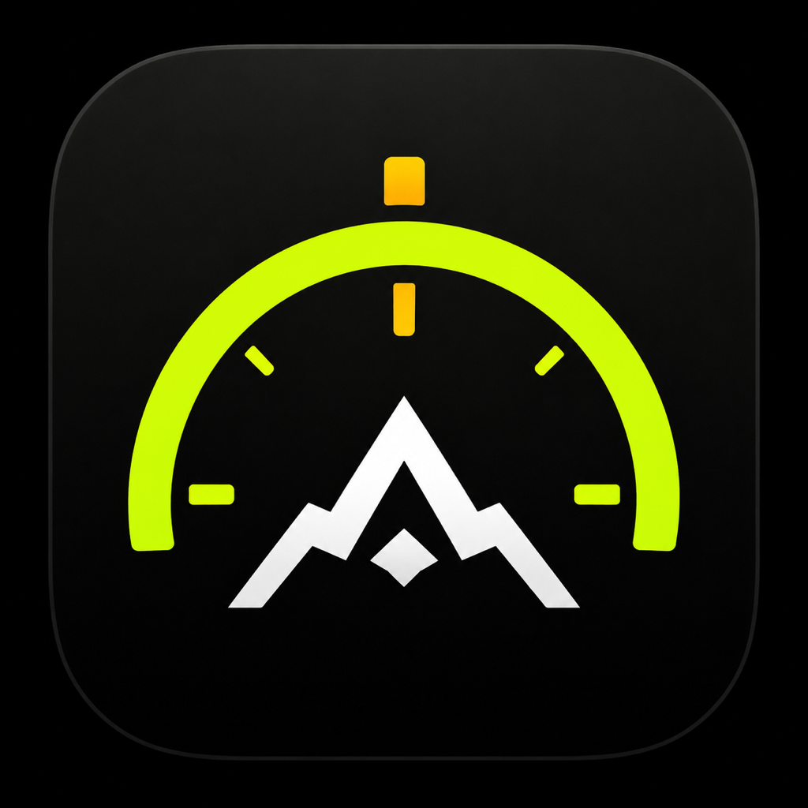
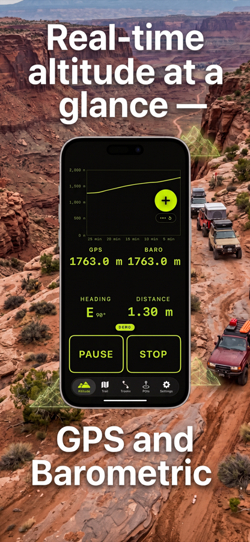
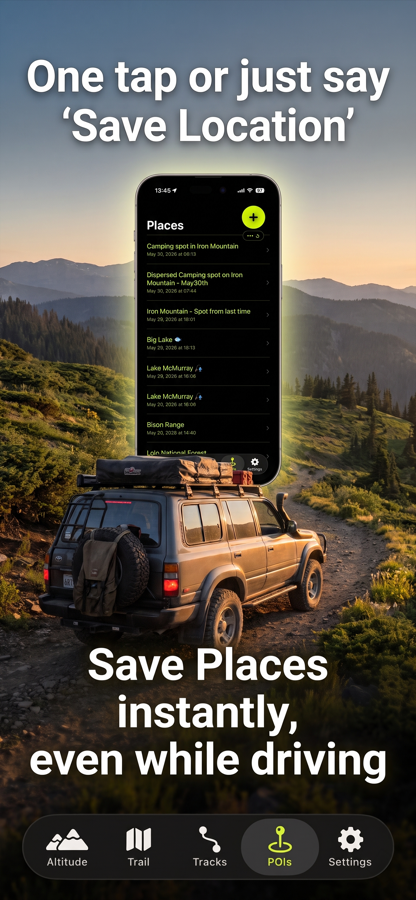
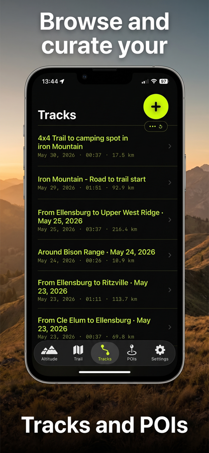
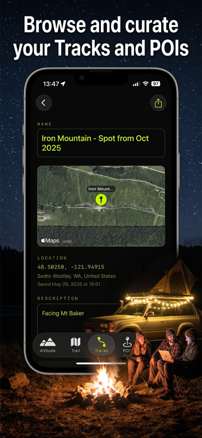
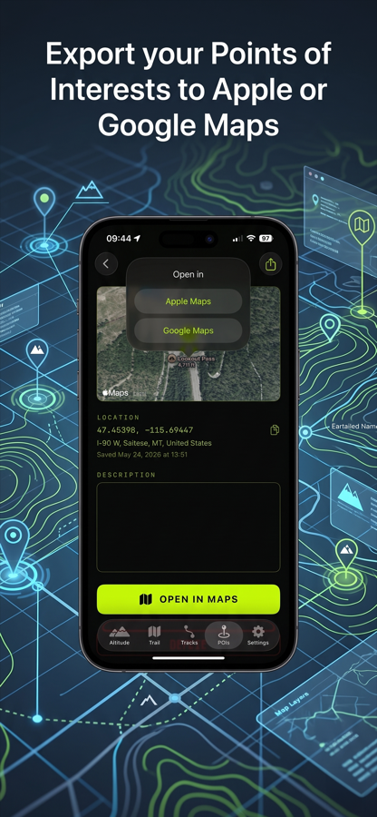
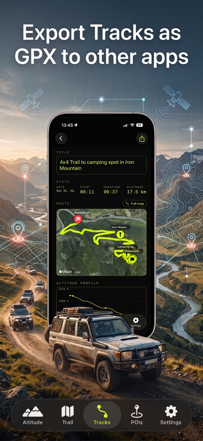

Altitude, Trails & POIs
Altisenda is a distraction-free altitude, trail, and POI companion built for road trips, overlanding, and camping adventures.
See your current altitude at a glance, save places instantly — even while driving — with Siri, and record your routes on a live satellite map. Free. Private. No account required.
Swipe through a few glimpses of Altisenda on iPhone.






Have a question, bug report, or feature request? I'd love to hear from you.
Contact
support@altisenda.comCore features — altitude display, POI saving, and track recording — work fully offline. Map tiles and reverse geocoding (auto address lookup) require an internet connection.
Altisenda registers a Siri phrase out of the box: just say "Hey Siri, Save Location in Altisenda" and a pin is dropped at your current coordinates. You can rename or add notes later.
Prefer to skip the app name? Install the free "Save Location" Shortcut (also available from Settings → Siri inside the app). Once added, just say "Hey Siri, Save Location."
Yes. Every recorded track can be exported as a standard GPX file, compatible with Strava, Garmin Connect, Komoot, Google Earth, and virtually every mapping app.
No. Altisenda does not use accounts, does not send location data anywhere, and does not include analytics or ads. Your places and tracks stay on your device.
Metric (meters, kilometers) and imperial (feet, miles). You can switch anytime in Settings.
Altisenda is designed to be private by default: